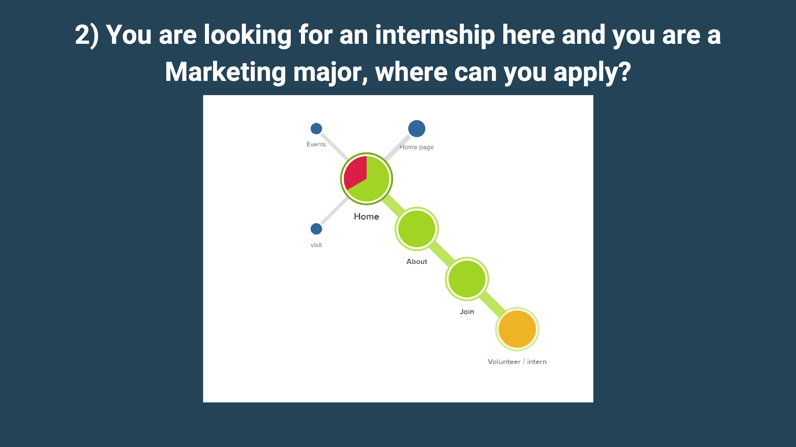
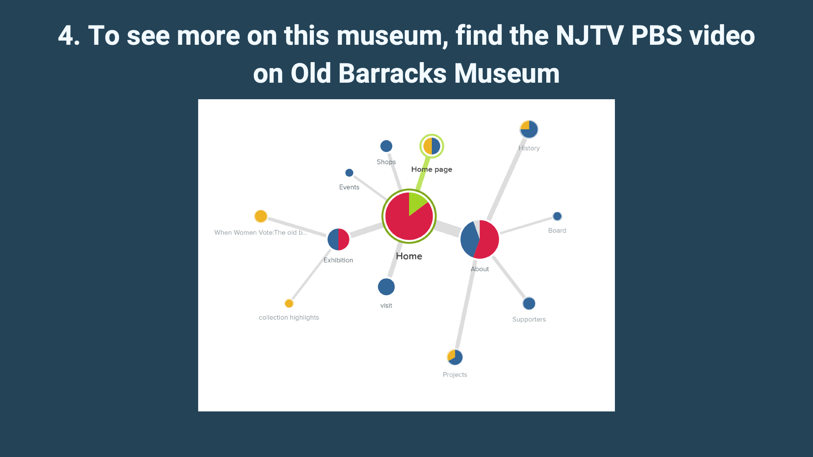
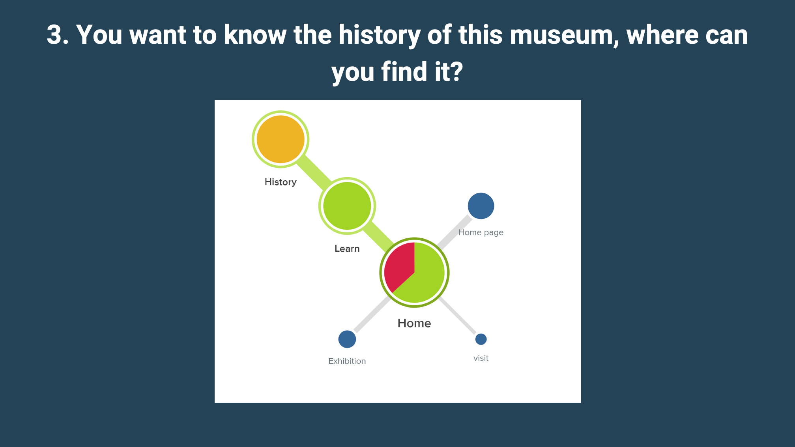
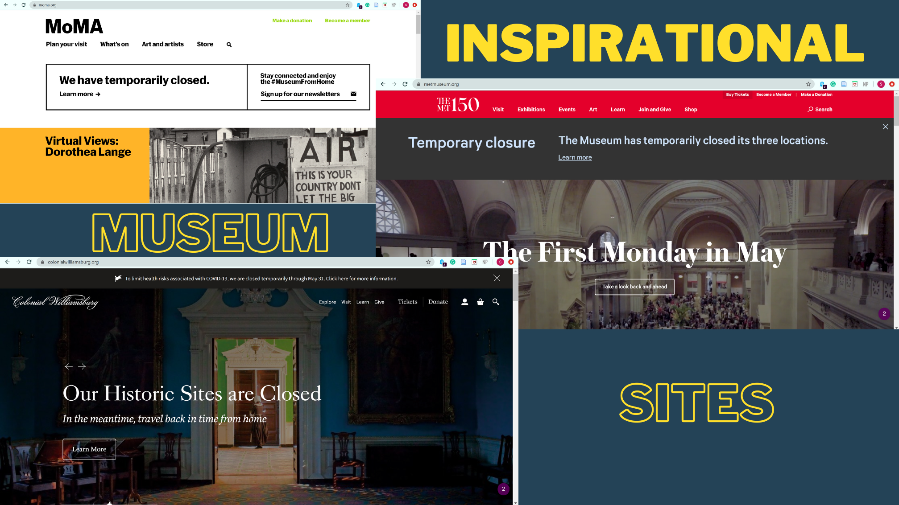

Redesigning a historic museum's website around how visitors actually navigate.
The Old Barracks Museum, a touchstone for colonial and revolutionary history in New Jersey, wanted more people to interact with the museum online: buy tickets, sign up for events, join the newsletter. But patrons kept getting lost. Staff flagged that the pages under "About" were messy, and nobody really knew what visitors were actually looking for when they landed on the site.
My job: figure out where the navigation broke, then redesign it so finding things felt obvious.
I didn't want to redesign on a hunch. So I framed the project with two measurement systems first: Google's HEART framework for experience quality, and concrete KPIs tied to the museum's business goals. That way every change could be judged against numbers, not taste.
Sharing rate, newsletter sign-ups, and whether the museum now feels "on trend" and up to date online.
Time on page, return frequency, clicks on media and categories, and inputs in the search box.
New accounts, new subscriptions, first-time purchases, shared links, and event sign-ups.
Subscribe vs. unsubscribe rate, repeat event sign-ups, and successful repeat ticket buys.
Subscription deletions, About-page exits, and number of searches needed, the core wayfinding metric.
KPIs mapped each of these to a business outcome: ticket sales, membership and newsletter subscriptions, event attendance, and the museum's market value to new social groups. The user tasks were just as concrete, find items online with no difficulty, navigate the "About" page with heuristic intuition, and sign up for events.
Because of the pandemic, in-person testing was off the table. So I ran remote user-journey mapping: participants completed five controlled wayfinding tasks through a link that recorded the exact path they took on the site, every page they clicked on the way to (or away from) the goal.
Translated the client's goals into HEART signals and KPIs so success was measurable from the start.
Walked the live museum site and mapped where the existing "About"-heavy navigation hid key actions.
Newsletter, internship, volunteering, museum history, and contact, each traced as a real click path.
Restructured the navigation, then re-ran the identical tasks to measure the lift.
Each cluster map below is a real journey: the size of a node is how many people landed there, the color shows whether it helped (green), confused (red), or was a dead end (blue). The pattern was clear, people bounced between Home, About, and Contact hunting for things that should have been one obvious click away.
Sign-up was buried. Participants ping-ponged between Home, Learn, and Contact before finding it, if they found it at all. The most-visited nodes were the wrong ones.

The path ran through About → Join → Volunteer, logical only if you already knew the museum's vocabulary. The journey worked, but it was longer than it needed to be.

This was the worst offender. History was hidden so deep that only a quarter of testers reached it, scattering across Exhibition, Projects, Shops, and Supporters along the way.

Contact options were duplicated across Home, About, and a dedicated Contact node, splitting attention. Navigation worked for most, but took nearly two minutes and several detours.
Before redesigning, three lessons reshaped the next round: keep the test questions general so they don't lead, always check for tester bias, and reorganize "About", the single messiest part of the site.
I restructured the navigation so labels matched what visitors were actually hunting for. The biggest move: retiring the catch-all "About" page and surfacing its contents where people looked for them. Then I retested with the exact same controlled questions.
Buy a ticket, newsletter sign-up, and "Join & Give" promoted to the top level.
The catch-all "About" page, its contents redistributed where users expected them.
"Board" → "Faculty & Staff", plain language over insider terms.
"Rent" → "Host an Event / Rentals", naming the task, not the transaction.
Re-running the identical journey tasks on the redesigned navigation, success rates jumped across the board, and the hardest task of all went from a quarter of people to everyone.
Testing showed people expected updates alongside learning content, so the newsletter moved under a renamed "Learn More."
"Host an event / rentals" folded into a single Visit & Events hub, matching how visitors think about coming in.
Participant 5 scored just 40% but was the fastest tester with off-topic answers, flagged as a human-error outlier, not signal.
To set the bar, I studied how leading institutions, MoMA, The Met, and Colonial Williamsburg, structure their navigation and surface tickets, membership, and stories. Their clarity informed the new Old Barracks IA.

Defining HEART signals and KPIs up front meant every redesign decision could be defended with a number, not an opinion.
The biggest wins came from renaming and relocating, not redesigning visuals. "Board" → "Faculty & Staff" did more than any new graphic.
Journey mapping let me capture real click paths without a lab, and the before/after structure made the impact impossible to argue with.